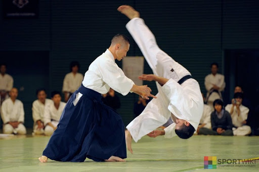
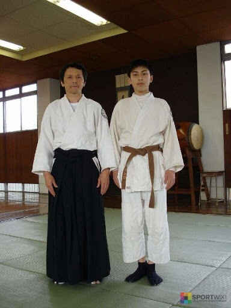

Айкидо — боевое искусство, представляющее собой синтез древних техник самообороны и борьбы в сочетании с философией гармонии духа.

История возникновения айкидо.
Основателем айкидо считается Морихей Уэсиба, а год основания – 1925. Заняться изучением практики мужчину подвигли его болезненность и хилость. За годы освоения древних единоборств Уэсиба из слабого и уязвимого ребенка превратился в крепкого, выносливого и мускулистого мужчину. Он перенимал опыт у учителей многих направлений. Но несмотря на идеальное тело и славу непобедимого воина, его душа не находила покоя. Тогда он обратился к религиозным и философским учениям. Итог – создание собственной школы Айкикай, которая положила начало боевому искусству под названием айкидо и объединила в себе физическое и духовное развитие.
Только после Второй мировой войны Морихей обнародовал свое открытие. До этого в школе обучались только проверенные люди. Сегодня существует множество стилей айкидо, со своими техниками и толкованием. Но главный его принцип – в ходе борьбы заботиться и о нападающем – остается неизменным.
Философия и принципы айкидо.
Философия айкидо заключается в гармонии тела и духа, дыхания и движения, в полном отказе от собственных амбиций. Это не просто боевое искусство. Это движения, направленные на защиту, а не на атаку. Здесь упор делается на силу разума, а не на физическую силу. Во время борьбы тело должно быть расслаблено, а ум напряженным. Цель айкидо – не победа. Цель айкидо – побудить противника не нападать и перенаправить его агрессию в мирное русло. Цель айкидо – использовать агрессию оппонента против него же самого, а самому остаться в духовной безмятежности. Философия айкидо – равнение на природу, где царит гармония и нет конфликтов. Морихей верил, что его учение изменит человечество к лучшему. К основным принципам айкидо относятся:
Стили айкидо.
Хотя основатель учения был против выделения разных стилей борьбы, это неминуемо происходило. Ученики Уэсиба открывали собственные школы и преподавали практику исходя из собственного ее видения. А после его смерти школы основывались уже учениками его учеников. Поэтому неудивительно, что философия учения, по-разному истолкованная, задавала разные стили. На сегодняшний день известно более тридцати автономных направлений айкидо, среди которых:
Экипировка и оружие.
Для занятий понадобится спортивная комфортная одежда, позволяющая легко передвигаться, в том числе и на коленях. На первых порах подойдет футболка и спортивные трико. Обувь в айкидо нужна только для того, чтобы дойти до татами: сама практика проходит босиком. Серьезный подход к айкидо требует приобретения специальной одежды – кэйгори, так называется кимоно для айкидо.

Айкидо предполагает использование целого ряда оружия, среди которого: